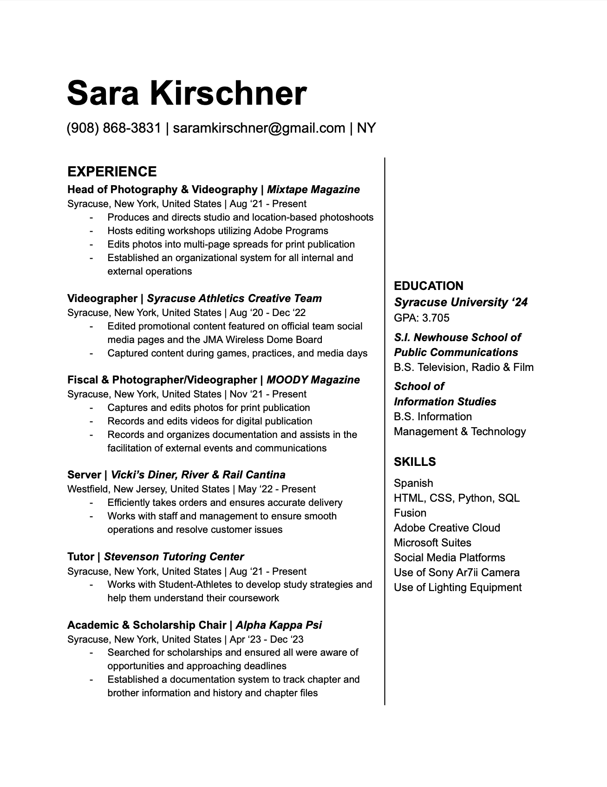

Photographer - Videographer
Graduated from Syracuse University S.I. Newhouse School for Public Communications and School for Information Studies, Sara Kirschner explores advancements in technology and data to push the bounds of traditional media. Her work acts as a platforms showcasing individual's stories and work.
Sara Kirschner has experience operating as the Head of Photography and Videography for Mixtape Magazine and the primary PR Manager for a couture house for independent designers. With work covering a variety of mediums, Sara has pieces showcased by a variety of organizations and publications.
For any questions or project inquiries please feel free to reach out at saramkirschner@gmail.com.
